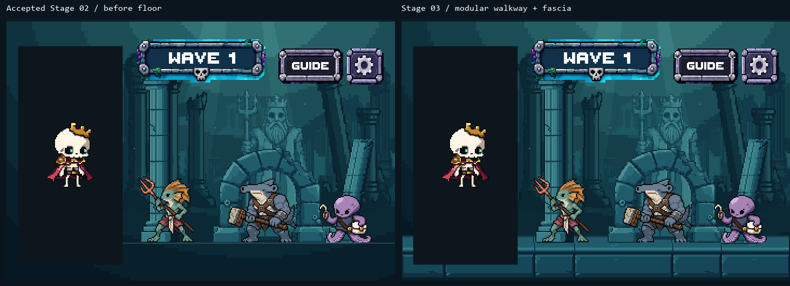
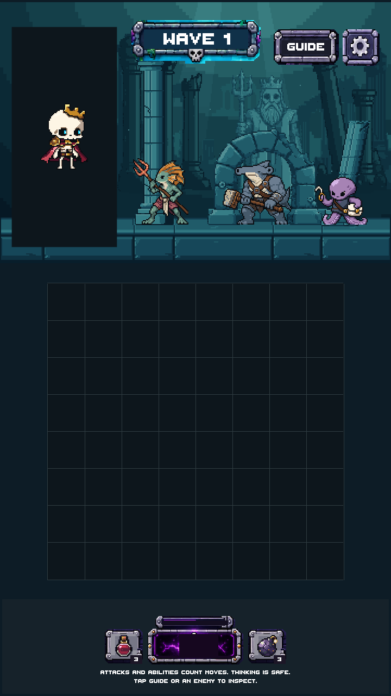
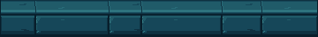
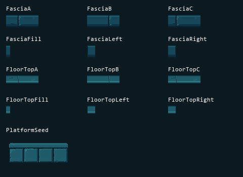
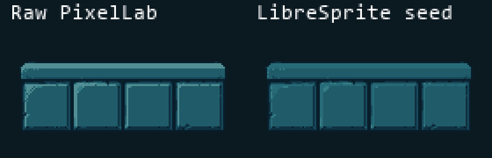
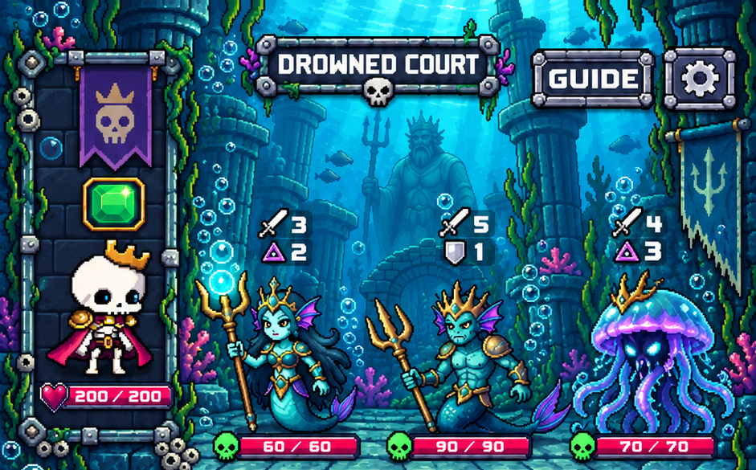
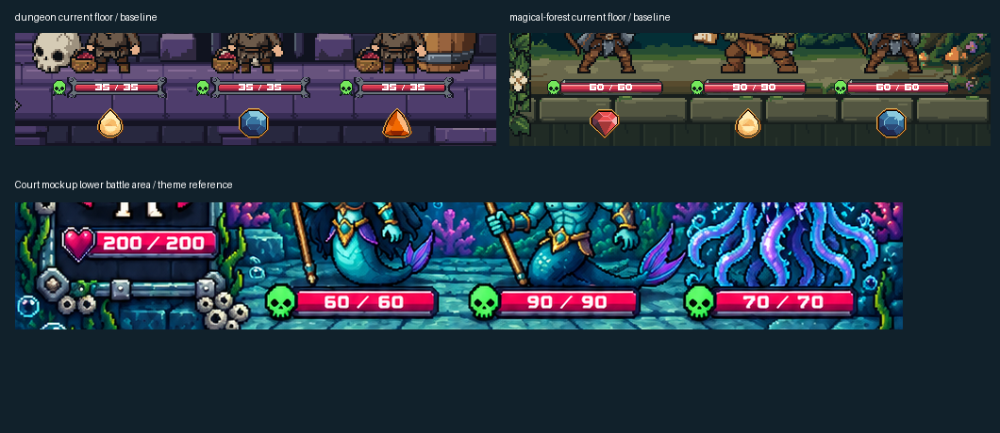

Modular walkway and platform fascia · candidate for review · no merge
A calm side-view floor using the accepted blue-teal stone family. Six generations spent; 600.20 remain. Approved backgrounds, architecture, character art and shared UI are unchanged. These are actual Unity art-only camera renders, not new gameplay screenshots.

Same scene and floor baseline. The new platform spans behind the portrait; its staging mask remains on top.

Board grid, portrait backing and lower environment are staging placeholders. Live health, countdown and safe-area behavior remain integration-stage checks.


12 modular pieces + the cleaned seed. Every legal left/right join is exact; 50 pairings tested. The complete floor is assembled from 16 independent sprites.

The source silhouette is unchanged. Bevels were subdued and the modular joins authored in LibreSprite; no source resizing.
Pack composition reference

Current floor baselines / target study

The reference guides mood and material; the existing flat combat footprint governs placement. Coral, kelp and dressing are later stages.
| Piece | Native size | Opaque colors | Files |
|---|---|---|---|
| FasciaA | 64 × 26 | 5 | PNG · LibreSprite |
| FasciaB | 64 × 26 | 5 | PNG · LibreSprite |
| FasciaC | 64 × 26 | 5 | PNG · LibreSprite |
| FasciaFill | 8 × 26 | 4 | PNG · LibreSprite |
| FasciaLeft | 16 × 26 | 4 | PNG · LibreSprite |
| FasciaRight | 16 × 26 | 4 | PNG · LibreSprite |
| FloorTopA | 64 × 16 | 5 | PNG · LibreSprite |
| FloorTopB | 64 × 16 | 5 | PNG · LibreSprite |
| FloorTopC | 64 × 16 | 5 | PNG · LibreSprite |
| FloorTopFill | 8 × 16 | 5 | PNG · LibreSprite |
| FloorTopLeft | 16 × 16 | 6 | PNG · LibreSprite |
| FloorTopRight | 16 × 16 | 6 | PNG · LibreSprite |
| PlatformSeed | 128 × 64 | 6 | PNG · LibreSprite |
Unity compilation and preview assertions passed. Exact source/export/import checks passed. 160 accepted files and 7,839 production/settings files remain unchanged. Normal/tall upper views match; the existing portrait mask and lower scene remain intact.
Full report · Pixel/preservation checks · Unity capture checks · Generation lineage
Stage 04 has not started. Awaiting approval.